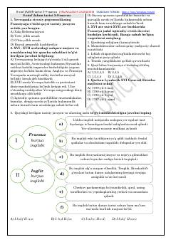

8J8-sinf Jahon tarixi fanidan 5-9-mavzular bo'yicha testlar to'plami.
Ushbu qo'llanma 8-sinf Jahon tarixi fanining 5-9-mavzulari bo'yicha tuzilgan test savollarini o'z ichiga oladi. Unda Yevropa tarixi, burjua inqiloblari va tarixiy shaxslar haqidagi bilimlar sinovdan o'tkaziladi.